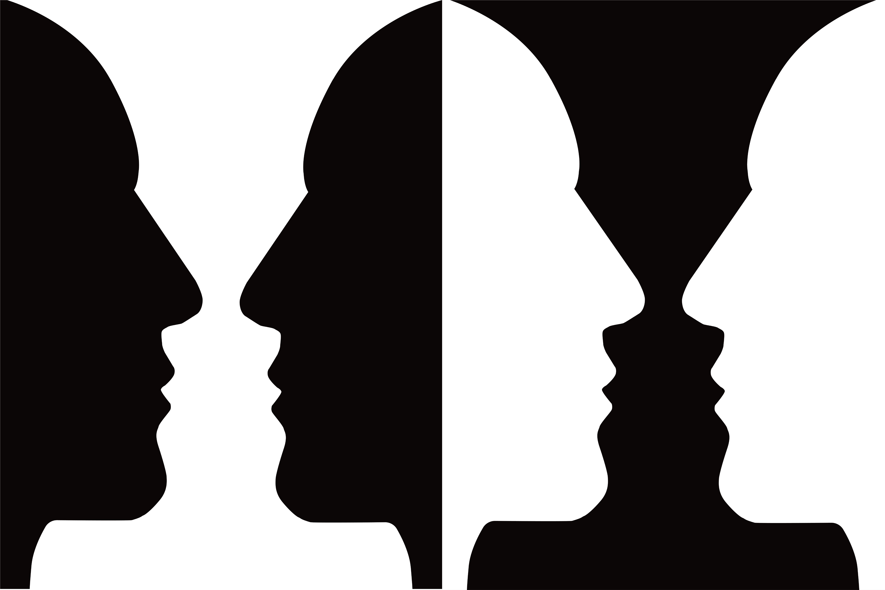

두 얼굴이 보인다



루빈의 꽃병(Rubin's Vase)은 1915년 덴마크의 심리학자 에드가 루빈(Edgar Rubin)이 발표한 다의적 도형이다. 검정 배경 위의 흰 꽃병으로도, 흰 배경 위의 두 얼굴로도 읽히는 이 이미지는 같은 정보가 두 가지 완전히 다른 해석을 동시에 허용한다는 것을 보여준다.
이 착시의 핵심은 전경과 배경의 관계다. 뇌는 시각 장면에서 하나를 전경(figure)으로, 나머지를 배경(ground)으로 처리한다. 꽃병을 전경으로 보면 두 얼굴은 배경이 되고, 얼굴을 전경으로 보면 꽃병은 배경이 된다. 둘을 동시에 전경으로 볼 수는 없다.
루빈의 꽃병은 게슈탈트 심리학의 핵심 개념인 "전경-배경 분리(Figure-Ground Segregation)"를 설명하는 데 가장 많이 사용되는 사례다. 뇌는 의식적인 노력 없이 자동으로 전경과 배경을 구분하는데, 이 이미지는 그 과정이 얼마나 임의적일 수 있는지를 드러낸다.
흥미로운 점은 두 해석 사이를 의도적으로 전환할 수 있다는 것이다. 꽃병에서 얼굴로, 얼굴에서 꽃병으로. 하지만 아무리 노력해도 두 가지를 동시에 볼 수는 없다. 뇌는 하나의 해석만을 선택한다.